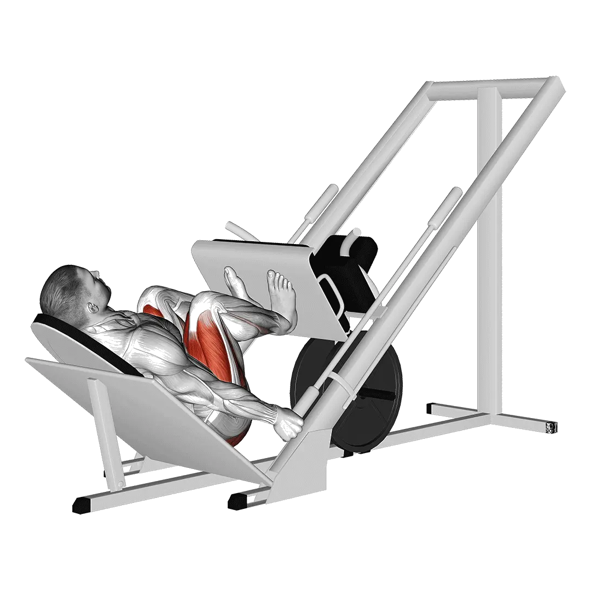

Presse à cuisses
Presse à cuisses permet de consulter la charge moyenne et les standards de force comme repères pour jambes. Les muscles principaux sont Quadriceps, Grand fessier, Ischio-jambiers.

Poids moyen : Intermédiaire
Repère pour une personne de niveau intermédiaire.
Hommes
499 lb
Femmes
310 lb
Poids moyen de Presse à cuisses [1RM]
| Niveau | ||
|---|---|---|
| Débutant | 191 lb | 91 lb |
| Novice | 323 lb | 181 lb |
| Intermédiaire | 499 lb | 310 lb |
| Avancé | 713 lb | 472 lb |
| Élite | 953 lb | 659 lb |
Note : ces standards sont des estimations de 1RM basées sur des pratiquants moyens. Ils peuvent varier selon le poids de corps, l'âge et d'autres facteurs personnels. Consulte les données détaillées dans le tableau ci-dessous.
Standards de force de Presse à cuisses (lb)
Hommes par poids de corps (lb) [1RM]
| Poids de corps | Débutant | Novice | Intermédiaire | Avancé | Élite |
|---|---|---|---|---|---|
| 110 | 88 | 172 | 289 | 437 | 607 |
| 120 | 107 | 198 | 323 | 479 | 656 |
| 130 | 126 | 224 | 356 | 519 | 703 |
| 140 | 145 | 249 | 388 | 557 | 747 |
| 150 | 165 | 274 | 419 | 594 | 790 |
| 160 | 184 | 299 | 449 | 630 | 831 |
| 170 | 202 | 322 | 478 | 664 | 870 |
| 180 | 221 | 346 | 506 | 697 | 908 |
| 190 | 239 | 368 | 534 | 729 | 945 |
| 200 | 257 | 391 | 560 | 761 | 980 |
| 210 | 275 | 413 | 586 | 791 | 1015 |
| 220 | 292 | 434 | 612 | 820 | 1048 |
| 230 | 310 | 455 | 637 | 849 | 1080 |
| 240 | 327 | 475 | 661 | 877 | 1112 |
| 250 | 343 | 495 | 684 | 904 | 1142 |
| 260 | 360 | 515 | 707 | 931 | 1172 |
| 270 | 376 | 534 | 730 | 956 | 1201 |
| 280 | 392 | 553 | 752 | 982 | 1229 |
| 290 | 407 | 572 | 774 | 1006 | 1257 |
| 300 | 423 | 590 | 795 | 1030 | 1284 |
| 310 | 438 | 608 | 816 | 1054 | 1310 |
Hommes par âge [1RM]
| Âge | Débutant | Novice | Intermédiaire | Avancé | Élite |
|---|---|---|---|---|---|
| 15 | 162 | 275 | 425 | 607 | 812 |
| 20 | 186 | 315 | 486 | 695 | 929 |
| 25 | 191 | 323 | 499 | 713 | 953 |
| 30 | 191 | 323 | 499 | 713 | 953 |
| 35 | 191 | 323 | 499 | 713 | 953 |
| 40 | 191 | 323 | 499 | 713 | 953 |
| 45 | 181 | 306 | 473 | 677 | 904 |
| 50 | 170 | 288 | 444 | 635 | 849 |
| 55 | 157 | 266 | 411 | 587 | 785 |
| 60 | 143 | 243 | 375 | 536 | 717 |
| 65 | 129 | 219 | 339 | 484 | 647 |
| 70 | 116 | 197 | 304 | 435 | 581 |
| 75 | 104 | 176 | 272 | 389 | 520 |
| 80 | 93 | 157 | 243 | 348 | 465 |
| 85 | 83 | 141 | 218 | 312 | 416 |
| 90 | 75 | 127 | 197 | 281 | 375 |
Femmes par poids de corps (lb) [1RM]
| Poids de corps | Débutant | Novice | Intermédiaire | Avancé | Élite |
|---|---|---|---|---|---|
| 90 | 44 | 109 | 206 | 335 | 487 |
| 100 | 54 | 124 | 227 | 361 | 518 |
| 110 | 64 | 138 | 246 | 385 | 546 |
| 120 | 73 | 151 | 264 | 407 | 573 |
| 130 | 82 | 165 | 281 | 429 | 599 |
| 140 | 91 | 177 | 298 | 449 | 623 |
| 150 | 100 | 189 | 313 | 468 | 645 |
| 160 | 109 | 201 | 329 | 487 | 667 |
| 170 | 117 | 213 | 343 | 504 | 687 |
| 180 | 125 | 224 | 357 | 521 | 707 |
| 190 | 133 | 234 | 370 | 538 | 726 |
| 200 | 141 | 245 | 384 | 553 | 744 |
| 210 | 149 | 255 | 396 | 568 | 762 |
| 220 | 156 | 265 | 408 | 583 | 779 |
| 230 | 164 | 274 | 420 | 597 | 795 |
| 240 | 171 | 283 | 432 | 611 | 811 |
| 250 | 178 | 292 | 443 | 624 | 826 |
| 260 | 185 | 301 | 454 | 637 | 841 |
Femmes par âge [1RM]
| Âge | Débutant | Novice | Intermédiaire | Avancé | Élite |
|---|---|---|---|---|---|
| 15 | 77 | 154 | 264 | 402 | 561 |
| 20 | 88 | 177 | 302 | 460 | 643 |
| 25 | 91 | 181 | 310 | 472 | 659 |
| 30 | 91 | 181 | 310 | 472 | 659 |
| 35 | 91 | 181 | 310 | 472 | 659 |
| 40 | 91 | 181 | 310 | 472 | 659 |
| 45 | 86 | 172 | 294 | 448 | 625 |
| 50 | 81 | 162 | 276 | 421 | 587 |
| 55 | 75 | 149 | 255 | 389 | 543 |
| 60 | 68 | 136 | 233 | 355 | 496 |
| 65 | 62 | 123 | 210 | 321 | 448 |
| 70 | 55 | 111 | 189 | 288 | 402 |
| 75 | 49 | 99 | 169 | 257 | 359 |
| 80 | 44 | 88 | 151 | 230 | 321 |
| 85 | 40 | 79 | 135 | 206 | 288 |
| 90 | 36 | 71 | 122 | 186 | 260 |
Note : une barre standard de salle de sport pèse généralement 44 lb.
Muscles ciblés
| Groupe | Muscles |
|---|---|
| Muscles principaux | Quadriceps, Grand fessier, Ischio-jambiers |
| Muscles secondaires | Adducteurs |
| Stabilisateurs | Aucun |
| Prise | Aucun |
Suivi et analyse dans l'app Shiba
Consultez poids, répétitions et progression au même endroit.
Comment lire le tableau
| Niveau | Description | Répartition |
|---|---|---|
| Débutant | Maîtrise la bonne technique et s'entraîne régulièrement depuis au moins 1 mois. | Bas 5% |
| Novice | S'entraîne régulièrement depuis au moins 6 mois. | Top 80% |
| Intermédiaire | S'entraîne régulièrement depuis au moins 2 ans. | Top 50% |
| Avancé | S'entraîne régulièrement depuis plus de 5 ans. | Top 20% |
| Élite | S'entraîne spécifiquement sur cet exercice depuis plus de 5 ans. | Top 5% |
Autres exercices
Jambes
Front squat
Jambes
Hip thrust
Jambes
Leg extension
Jambes
Presse à cuisses horizontale
Jambes
Hack squat
Jambes
Assis leg curl
Jambes
Squat bulgare aux haltères
Jambes / Haltères
Goblet squat
Jambes
Couché leg curl
Jambes
Élévation mollets à la machine
Jambes / Machine
Lunge aux haltères
Jambes / Haltères
Box squat
Jambes